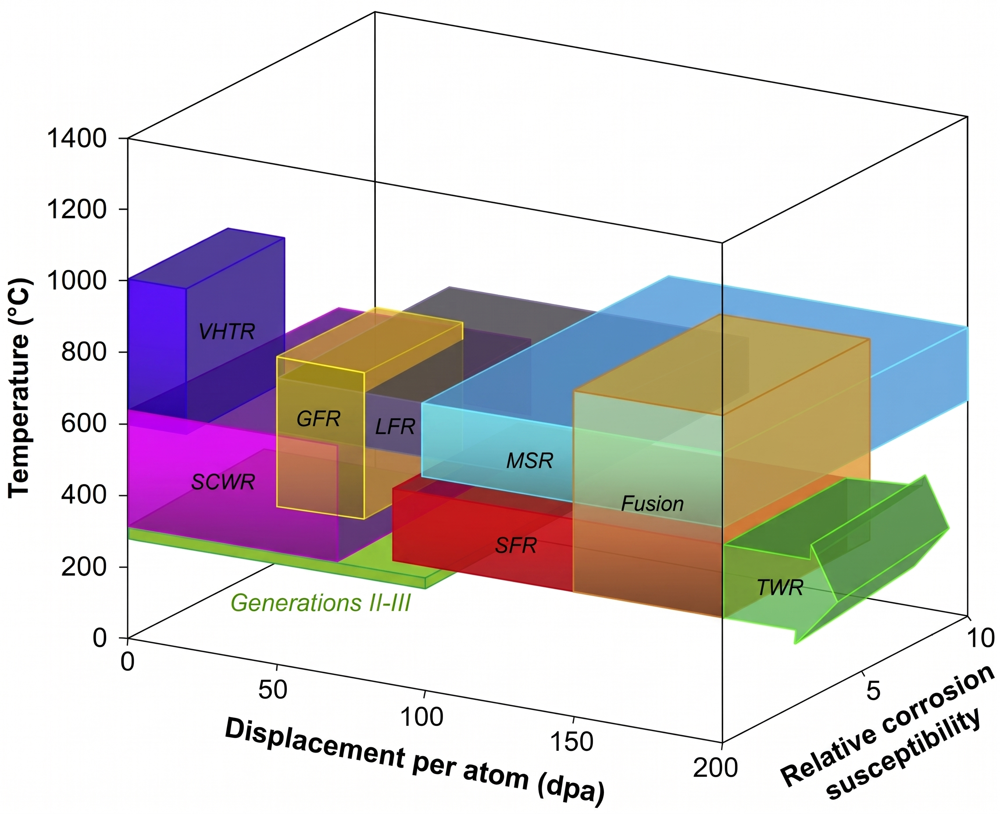
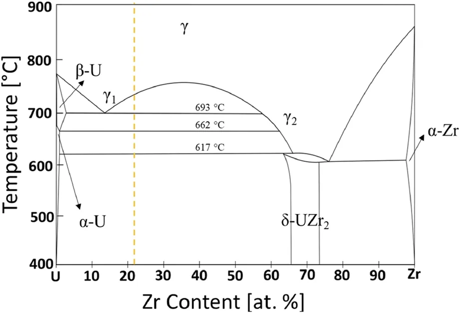
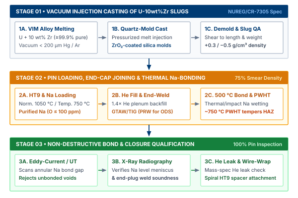
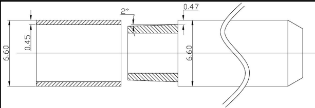
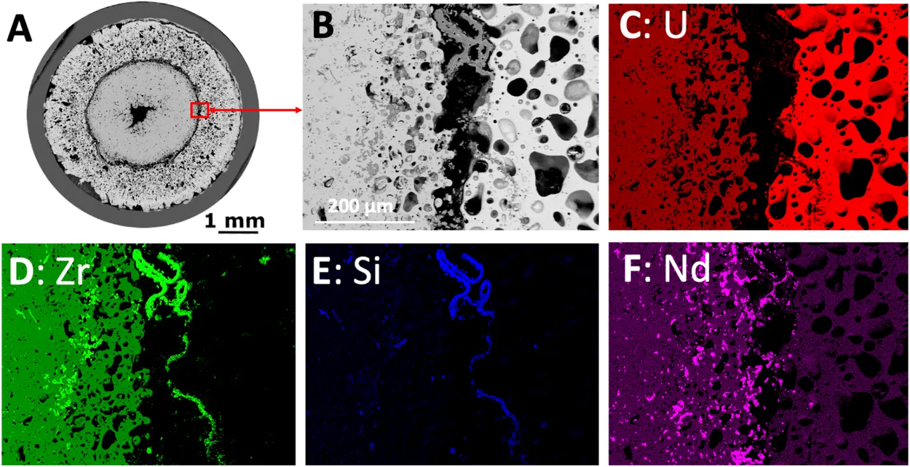
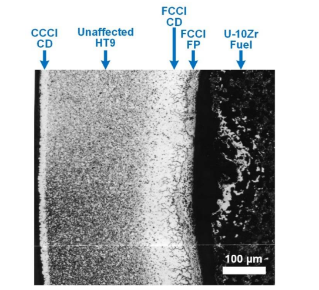
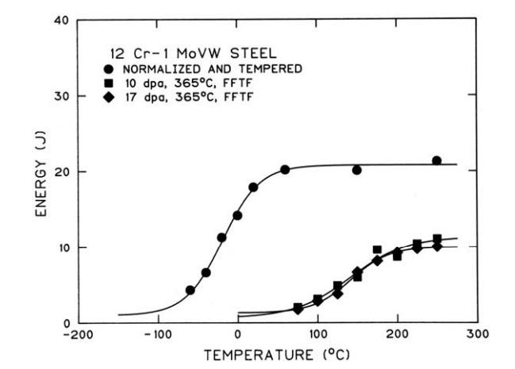
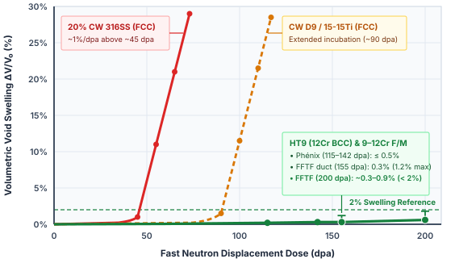
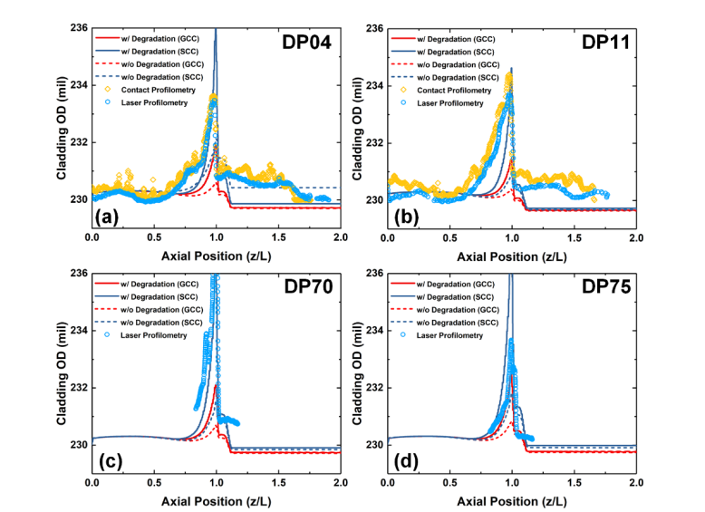

Internal Anti-FCCI Barriers
Co-extruded Zr liner or V/Cr/TiN coating blocks Ln–Fe and U–Fe interdiffusion.

Materials Selection, Degradation Mechanisms & Cladding Trade-Off
Oklo’s Aurora SFR targets 400–650 °C and 100–200 dpa via metallic fuel’s fissile density

A3F at INL: PDSA approved Nov 2025; EBR-II recycled fuel pathway for initial Aurora core loading.
Licensing Basis: NRC Aurora Fuel Qualification Report aligned with NUREG-2246 & NUREG/CR-7305.
75% smeared-density U-10Zr with Na bond and HT9 cladding accommodates early swelling
| NUREG/CR-7305 Reference Pin | |
|---|---|
| Fuel / Bond / Cladding | U-10 wt% Zr / Liquid Na / HT9 |
| Fuel OD / Cladding OD | ~5.0 mm (4.94 mm for 75% SD) / 6.9 mm (0.6 mm wall) |
| Smeared Density | 75% max |
| Plenum-to-Fuel Ratio | 1.4× fuel volume |
| BOL Peak LHGR / Burnup | 40–55 kW/m / 10 at% envelope |
Adding 10 wt% Zr lifts the solidus above 1200 °C and stabilizes BCC γ-phase in core

Injection casting, Na-bond UT inspection, and HT9 welding with PWHT govern pin quality


Open porosity vents ~70–80% of fission gas at ~30% swelling and drives Zr migration

Lanthanides migrate via Na pores to thin HT9 and risk U–Fe eutectic above ~725 °C

BCC HT9 limits swelling (<2% at 200 dpa), trading off DBTT shift and >650 °C creep
Face-centered cubic (316SS / Ti-modified D9) austenitic matrix; high Ni (~10–15 wt%).
Body-centered cubic tempered martensite (Fe–12Cr–1Mo–0.5W–0.5Ni–0.3V–0.2C).
High FCC dislocation bias → steep breakaway swelling (~1%/dpa) after 45–90 dpa incubation.
Low BCC bias + dense lath/carbide sinks → < 2% swelling up to 200 dpa (400–450 °C).
No ductile-to-brittle transition (no DBTT shift at low temperature).
Loop hardening + Cr-rich α′ (>9 wt% Cr) drive ΔDBTT ≈ +155 °C, saturating by 10–17 dpa.
Higher initial thermal creep strength, but high Ni leaching accelerates FCCI.
Lath recovery & M23C6 coarsening cap thermal creep above 600–650 °C (~60 MPa / 105 h).


1,262 U-10Zr/HT9 pins tested to 14–20 at% burnup prove steady-state reliability

Four levers address FCCI wastage, sodium-bond waste, and the 650 °C HT9 creep cap
Co-extruded Zr liner or V/Cr/TiN coating blocks Ln–Fe and U–Fe interdiffusion.
Small Pd, Sn, or Sb additions immobilize lanthanides inside the U–Zr slug.
Central void absorbs swelling; ultra-thin outer He gap (~35–50 μm) & hollow geometry limit ΔT without liquid Na.
1–3 nm Y–Ti–O nano-oxides raise creep limit to ~700 °C (requires PRW weld).
Synthesized from Xie et al. (2018), Yao et al. (2023), Seki et al. (2004), and IAEA (2013).
Fuel selection balances NRC licensing maturity against thermal margin and waste
| Fuel–Cladding Concept | Advantages | Disadvantages | Limiting Factor(s) |
|---|---|---|---|
| U-10Zr (Na) / 316SS-D9 | High early creep strength; no low-T DBTT; historical EBR-II data | Severe FCC void swelling after incubation; Ni leaching/FCCI | Void swelling (~10 at% BU cap) |
|
U-10Zr (Na) / HT9 Commercial Baseline |
<2% swelling at 200 dpa; 1,262-pin NRC database; high k | High-burnup FCCI wastage; reactive Na-bond waste | Creep >650 °C; U–Fe eutectic (725 °C) |
|
U-10Zr (Na+Liner/Pd) / HT9 Stage 1 Target |
Cuts FCCI wastage & extends burnup using qualified HT9 tube | Extra fabrication/coating cost; unaddressed HT9 creep ceiling | HT9 thermal creep >650 °C; liner bonding QA |
|
Annular U-10Zr (He) / 9Cr-ODS Stage 2 Target |
No reactive Na waste; creep to ~700 °C; low α′ risk | Lower gap kHe; expensive PM/MA tubing; low TRL | PRW end-cap weld qual.; tight gap tolerances |
|
MOX / 15-15Ti External Benchmark |
Mature oxide/LWR fabrication & European LFR/SFR heritage | 8–10× lower k; lower fissile density; no Na-bond synergy | Centerline T margin; 15-15Ti swelling >120 dpa |
Trade-off grounded in NUREG/CR-7305, PNNL-35642 (2024), IAEA-TECDOC-1689, and Xie et al. (2018).
Two-stage roadmap pairs near-term NRC licensability with high-T core performance
Because PVD is line-of-sight limited inside narrow cladding tubes (ID 5.7 mm, L/D > 150), deposit a gas-phase CVD/electroplated ductile Cr/V compliant interlayer (accommodating FCMI creep strain) paired with a nanometric ALD ceramic barrier (Y2O3, TiN, or ductile amorphous Al2O3) to block both Ln wastage and 725 °C U–Fe liquefaction.
Valorize noble fission-product Pd recovered during EBR-II electrorefining (~1–2 wt% Pd addition) inside an annular He-bonded slug: traps lanthanides as stable PdLn / Pd2Ln intermetallics while eliminating pyrophoric Na-bond disposal.
Fusion welding destroys 9Cr-ODS nano-oxides (Y2O3 coarsening): Stage 2 requires industrial qualification of solid-state PRW end-cap joining, lower PM/MA tubing cost, tight He-gap tolerances, and prototypic TREAT transient tests.
Primary peer-reviewed literature and regulatory reports supporting this case study
Staged metallic fuel deployment enables licensable SFRs now and hotter cores next
Questions & Discussion
Davide Rapallo | s324486@studenti.polito.it | Politecnico di Torino